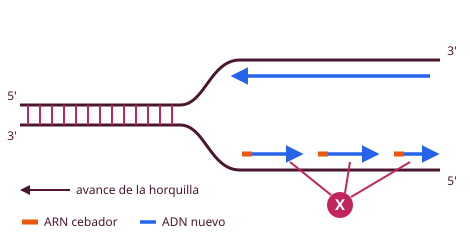

Replicación semiconservativa: cada ADN hijo tiene una cadena vieja y una nueva. La ADN polimerasa solo sintetiza 5'→3': hebra retardada en fragmentos de Okazaki, que une la ADN ligasa.
La ARN polimerasa no repara errores: si detecta uno, desecha el ARN. El factor σ reconoce el promotor.
Maduración del pre-ARNm: caperuza (CAP) en 5', cola de poli-A en 3' y splicing (fuera intrones, se unen exones).
Codón de inicio AUG (metionina); codones de parada UAA, UAG, UGA. Las proteínas citoplasmáticas se degradan por ubiquitina-proteosoma.
La replicación y la transcripción ocurren en el núcleo (donde está el ADN); el ARNm sale al citosol y la traducción ocurre en los ribosomas. La síntesis de proteínas es carísima: hasta el 80 % del gasto energético de la célula.
1. Replicación del ADN Muy importante
Es semiconservativa: cada molécula hija conserva una cadena molde original y otra recién sintetizada (se descartaron los modelos conservativo y dispersivo).
Es bidireccional: desde cada origen salen dos horquillas. Eucariotas: muchos orígenes; procariotas: uno solo (OriC).
La maquinaria se llama replisoma y trabaja en la horquilla de replicación.
Proteína (E. coli)
Función
ADN girasa (topoisomerasa II)
Controla el superenrollamiento para poder copiar
Helicasa (DnaB)
Abre la doble hélice rompiendo los puentes de H
SSB
Se une al ADN de hebra simple y evita que se vuelva a cerrar
Primasa
Sintetiza el ARN cebador
ADN polimerasa III
La que realmente copia (elongación), solo 5'→3'
ADN polimerasa I
Quita los cebadores, rellena huecos; también repara
ADN polimerasa II
Reparación de nucleótidos erróneos
ADN ligasa
Une los fragmentos
Iniciación en E. coli
DnaA, gastando ATP, reconoce el origen OriC y se acumula, distorsionando el ADN.
OriC es rico en pares A-T (solo 2 puentes de H): zona débil, fácil de abrir.
La helicasa (DnaB) sigue desenrollando y las proteínas SSB estabilizan las cadenas sueltas.
Elongación

Horquilla de replicación. X = fragmentos de Okazaki de la hebra retardada, cada uno con su ARN cebador.
La ADN polimerasa solo sintetiza en sentido 5'→3' y necesita un cebador de ARN (lo hace la primasa).
Hebra conductora: continua.
Hebra retardada: discontinua, en fragmentos de Okazaki.
La ADN polimerasa I cambia el cebador por ADN y la ADN ligasa une los fragmentos.
Las ADN polimerasas corrigen sus errores (actividad exonucleasa 3'→5').
Terminación: al llegar a los extremos, las polimerasas I y II corrigen errores, la I cambia los cebadores por ADN y la ligasa une los fragmentos de Okazaki. En E. coli hay sitios de terminación Ter, reconocidos por la proteína Tus (una contrahelicasa).
2. Transcripción Muy importante
Solo se transcriben las secuencias con información: los genes (no toda la molécula, como en la replicación). Hay que reconocer un sitio de inicio y uno de terminación.
Se copia solo la hebra molde (3'→5'); el ARN es antiparalelo y complementario a ella. Sustratos: NTP.
La ARN polimerasa copia una cadena de ADN en ARN (5'→3'), sin necesidad de cebador.
En E. coli, el núcleo de la enzima (α₂ββ'ω) necesita el factor σ (sigma) para reconocer el promotor: solo la holoenzima (núcleo + σ) puede iniciar.
Secuencias consenso del promotor: TTGACA + 16-17 nucleótidos + TATAAT. Cuanto más se parezca un promotor a ellas, más fuerte es.
La ARN polimerasa desenrolla el ADN (hace de girasa y helicasa) y forma la burbuja de transcripción; avanza «como un gusano» (compresión y expansión).
Terminación: dependiente de secuencia (zona rica en C-G que forma una horquilla + unas 6 U seguidas) o dependiente de la proteína ρ (rho), un hexámero con actividad ATPasa que desestabiliza el complejo.
Errores: hay un chequeo cada 10 nucleótidos, pero la ARN polimerasa no puede reparar: detiene la copia y desecha el ARN erróneo.
★ Clave de examen
ADN polimerasa: necesita cebador y corrige errores (3'→5'). ARN polimerasa: no necesita cebador y no corrige (desecha la molécula).
Maduración del ARNm en eucariotas
Modificación
Qué es
Extremo 5'
Caperuza (CAP) de 7-metilguanosina
Extremo 3'
Cola de poli-A (poliadeninas)
Splicing (corte y empalme)
Se eliminan los intrones y se unen los exones (espliceosoma, con snRNA)
La caperuza y la cola protegen al ARNm de las enzimas del citoplasma. Además se modifican bases y unas ribonucleasas separan los ARNt y ARNr de sus transcritos precursores.
3. Código genético Muy importante
Cada codón = 3 nucleótidos → 64 codones: 61 codifican aminoácidos y 3 son de parada.
Inicio: AUG → metionina. La Met iniciadora suele eliminarse después (aminopeptidasa).
Parada (STOP): UAA, UAG, UGA. No codifican aminoácidos; los reconocen los factores de liberación.
Es degenerado (varios codones por aminoácido), casi universal, sin solapamientos y sin comas.
Truco para recordar
STOP: «U Are Away, U Are Gone, U Go Away» → UAA, UAG, UGA. Todos empiezan por U.
4. Traducción Importante
Activación (en el citoplasma): la aminoacil-ARNt sintetasa une cada aminoácido a su ARNt por un enlace éster (gasta ATP) → aminoacil-ARNt, rico en energía. El aminoácido no reconoce el codón por sí mismo: el ARNt hace de adaptador.
Iniciación: se forma el complejo ARNm + ribosoma + Met-ARNt sobre el AUG. Gasta GTP.
Elongación: los aminoacil-ARNt entran por el sitio A, la cadena crece en el sitio P (peptidil transferasa forma el enlace peptídico) y el ARNt vacío sale por el E. Gasta GTP.
Terminación: al llegar a un codón STOP, los factores de liberación sueltan la proteína.
5. Maduración y degradación de las proteínas Importante
Proteólisis: degradación de las propias proteínas por proteasas. Es la principal fuente endógena de aminoácidos y un mecanismo de control que elimina proteínas defectuosas o innecesarias.
Maduración postraduccional: eliminación de la Met inicial, plegamiento (chaperonas), glicosilación, fosforilación, hidroxilación (colágeno, tema 6), proteólisis parcial (proinsulina → insulina).
Degradación en el citoplasma: sistema ubiquitina-proteosoma. La ubiquitina marca la proteína y el proteosoma la rompe (destaca la secuencia PEST, típica de proteínas de vida corta).
Degradación en lisosomas: sobre todo proteínas extracelulares o captadas por endocitosis.
Ampliación
Eucariotas: la telomerasa completa los extremos de los cromosomas. Hay tres ARN polimerasas: la I (ARNr), la II (ARNm) y la III (ARNt). El splicing alternativo permite obtener varias proteínas de un mismo gen.